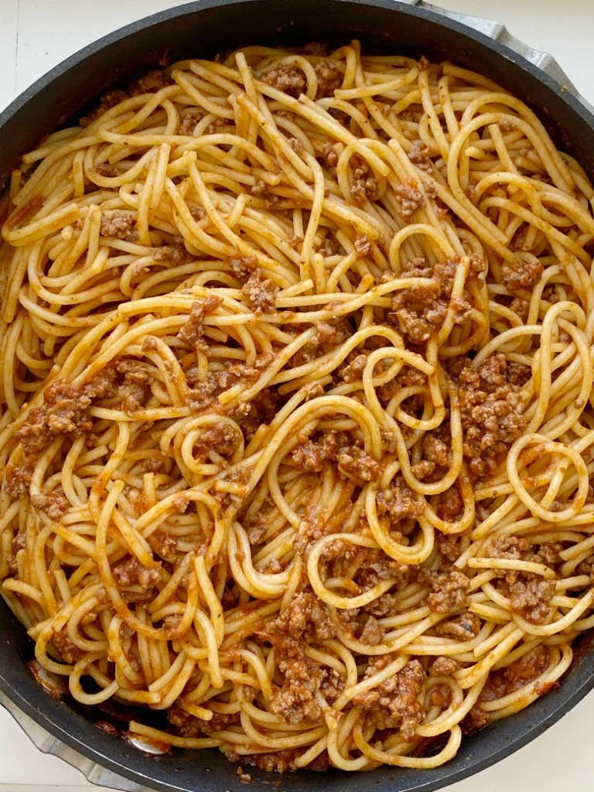

Spaghetti

Description
The recipe included here is a delicious, all-in-one spaghetti recipe for the perfect at-home pasta. Look no further for a great Italian classic that will leave your family's mouth watering and them wondering where to get seconds.
Ingredients
- 1 lb ground beef
- 1/2 teaspoon salt
- 1/4 teaspoon pepper
- 1 can (14.75) oz beef broth
- 1 can (8oz) tomato sauce w/garlic, oregano, basil
- 1 can (6oz) tomato paste w/Italian herbs
- 3 cloves garlic
- 1 teaspoon granulated sugar
- 1 teaspoon Italian seasoning
- 1 box (16oz) thin spaghetti noodles
Instructions
- Cook and crumble ground beef, salt, and ppper in a large skillet pan over-medium heat until the meat is no longer pink.
- Add beef broth, tomato sauce, tomato paste, garlic, sugar, and Italian seasoning. Bring to a boil. Once boiling, reduce heat to low and let simmer for 45 minutes.
- About 10-15 minutes before the spaghetti sauce is done, cook pasta noodles according to package directions. Drain in a colander but do not rinse. Add the cooked noodles into the spaghetti sauce and mix until all noodles are coated in the sauce.